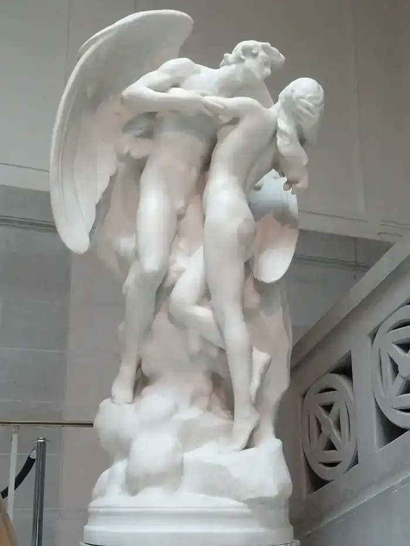

The text
The Nephilim appear in Genesis 6:4, in the report of the spies in Numbers 13:33, and in a related form in Ezekiel. Genesis says they were on the earth in those days and afterwards, when the sons of God came to the daughters of men; Numbers has the spies describing them as giants. The passages are brief and their translation is disputed.
Maps, diagrams and images


The Hebrew word is of uncertain etymology, and the texts are concerned with the corruption of the world before the flood, not with a species. The 'sons of God' are a motif from the wider ancient Near Eastern literature.
The literature
The modern edifice — a surviving bloodline, hybrid beings, giant skeletons, ongoing sightings — is built from a few verses, later apocalyptic texts, nineteenth-century American newspaper hoaxes about giant skeletons, and twentieth-century paperback publishing. None of it is in Genesis.
Documented: the verses, and the difficulty of translating them.
Documented: the later literature that developed the idea.
Documented: the nineteenth-century 'giant skeleton' newspaper hoaxes.
Not established: any physical evidence of a giant race.
The label: fiction — the archive's category for a literary figure that has been presented as a historical one.
Why it is in the archive
Because the gap between three verses and a publishing industry is the largest in this collection, and because the giant-skeleton hoaxes are a documented, dated, checkable origin for the modern form.
Open resources on this topic
- BookYoruba Biblical Giants, The Watchers And The Nephilim — Free Gospel Tracts (Internet Archive, free to read)
- BookSomali Biblical Giants, The Watchers And The Nephilim — Free Gospel Tracts (Internet Archive, free to read)
- BookVietnamese Biblical Giants, The Watchers And The Nephilim — Free Gospel Tracts (Internet Archive, free to read)
- PapersOpen-access articles: DOAJ · PubMed Central · Internet Archive Scholar
- BooksPublic-domain and borrowable copies: Open Library · Project Gutenberg · Google Books
More images
Cite this page
Momin, S. (2026). The Nephilim. The Larger World Archive. https://drsamonline.github.io/LARGE_GLOBE/nephilim.htmlMomin, Sohil. “The Nephilim.” The Larger World Archive, 2026, https://drsamonline.github.io/LARGE_GLOBE/nephilim.html.Momin, Sohil. “The Nephilim.” The Larger World Archive, 2026. https://drsamonline.github.io/LARGE_GLOBE/nephilim.html.@misc{the2026nephilim,
author = {Momin, Sohil},
title = {The Nephilim},
year = {2026},
howpublished = {The Larger World Archive},
url = {https://drsamonline.github.io/LARGE_GLOBE/nephilim.html},
note = {Last reviewed 20 November 2026}
}Last reviewed 20 November 2026 · Corrections policy · this page is not peer reviewed
Sources for this page
- Wikipedia, “Nephilim” — the texts and the interpretationsen.wikipedia.org
- Wikipedia, “Genesis flood narrative” — the contexten.wikipedia.org
- Wikipedia, “Giant skeleton hoax” — the modern origin of the sightingsen.wikipedia.org
- Wikipedia, “Book of Enoch” — the text that developed the ideaen.wikipedia.org